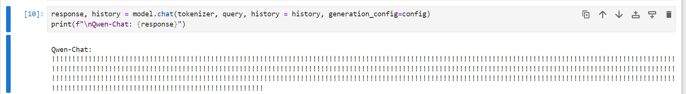
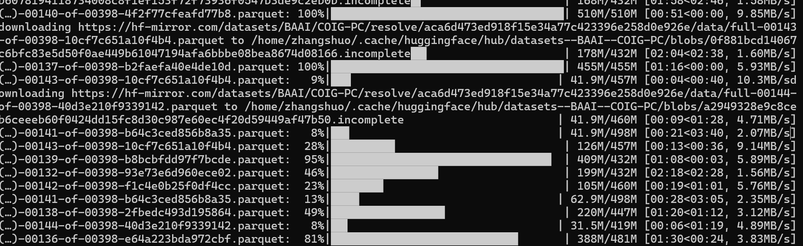
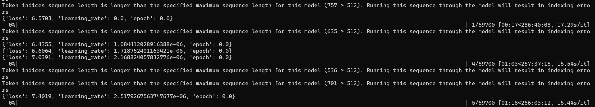

DailyRecord-April
4.1
上午，把qwenllm/qwen的docker image放到服务器上了，但是下午发现模型没放，还要下载72b-chat的模型再放上去；而且这个东西好像要自己写应该服务端py文件？
下午复习了一下long-context的论文，看了retrieval的一些如longllama，温故知新，没跳出已有框架的同时，感觉理解更深了
晚上，和SH打了一把游戏，然后和沈老师开周会，汇报了一下自己目前的一些理解。得到下一步的研究内容是：把retrieval 的方式在大模型上都实现一下
之后，继续和SH、NJ一起打了大乱斗
虽然是愚人节，但是无事发生
- 明日任务：阅读论文；学习修改大模型的方法
4.2
草！这一天干啥了我给忘了！原来日记漏了一天，4.8才发现！
好像还是在看代码和教程？
4.3
上午，阅读qwen的model_qwen.py文件，尝试理解模型结构，寻找修改方法。最终目的是将kv retrieval加入到模型中去；目前没什么头绪，是直接改model文件，还是写个新的继承一下？继承的话如何与已有文件保持联系和交互？
qwen的py代码没有啥注释，突然想到可以看一下transformer包中的代码，拿llama做参考，希望有注释可以好看一点
吃了好大的饼
将4090机器上的qwen-72b-chat放到A800上，尝试让它跑起来；昨天前辈哥用vllm加速一些模型，基本上没跑起来报错，不知道是什么情况；没查到解决方案
明日任务：明日个P！清明节假期！好吧，这个饼还是挺不错的，也许会假期学习一下。不会的好多
4.4-4.6
假期第一天：上午打游戏，中午吃了昨晚下班时买的罗森便当；晚上去NJ那里，吃了川菜馆子“椒榆”（好像是这个名字），一个炒鸡、一个黄焖茄子、一个蒜泥白肉、一个小酥肉（没怎么吃，打包带回去当第二天的早饭了）；之后在附近转了转，然后坐地铁去上地一个超市逛了逛，吃了又一家杏仁豆腐，不如德和斋；打包了红豆双皮奶和一个什么奶回去第二天吃；去地铁站打道回府，路上看见北体的一个小破门，另外还有漂亮MM。之后到家，和SH打了会儿游戏。
假期第二天：打游戏的一天奥，无事发生！和SH、NJ打了好久的游戏；中午吃的猪脚饭，还不错；晚上吃的炸蛋螺丝混，也挺不错，熙螺湾这牌子在仙林NJU的对面也开了一家，开了不久；所以点的时候还是比较放心的。
假期第三天：中午和NJ一起去安贞门；在一家小巷子里的老馆子里面吃地地地地地地地道儿的百京菜！八大碗中的牛杂，好吃！牛肠煮的最好吃；一个炒牛尾，还行；一个羊杂砂锅，不错，但是没牛杂好吃；一个麻豆腐，挺好吃，很新奇；吃完饭，去买了芬达，合起来和大洋是有点差别，感觉大洋更好喝一点；然后沿河的公园里面有什么花展，走马观花的逛了逛。忘记给NJ带德和斋杏仁豆腐了，明明前天才夸下海口…
三天里，没怎么学习，网络小说倒是没少看；代码什么的搞了搞但好像是在做无用功…..
4.7
不想上班啊啊啊啊啊啊！
上午折腾随身wifi，顺便把qwen-72b-chat完全放到了A800的服务器上，跑了一下服务端，正常；后续工作可能就是，尝试修改模型之类的，再把后端接口什么的搞一搞？
下午，搜索阅读了一些论文，感觉收获不大；觉得是自己的代码能力不足的问题，找了篇开源代码的去读，GitHub 1k star， 但是没读懂，感觉代码写的好像不太好；遂重新阅读transformer中llama的源码；因为之前发现qwen的结构和llama很相似，希望读懂llama后能很快的触类旁通。遇到了一些问题需要记录
- RoPe编码的实现，看的半懂不懂，没有深究，后续视情况看是否需要深入。
- llama attention模块中，有这两个参数，尚未搞懂作用是什么：
1 | cache_position: Optional[torch.LongTensor] |
晚上在DNF神迹上抽黑钻售货机，因为没有自动抽取的功能，所以尝试用pyautogui写了个自动抽奖的脚本，但是实际运行的时候发现移动位置是对了，但无法点击到游戏程序内部的东西，又发现自己使用鼠标一直点击倒也可以，于是又开了鼠标连点器，发现鼠标连点器也点不到游戏程序内部的东西；这两种相似的现象带来的启发是：这种基于GUI模拟点击的程序，或许没有聚焦到应用程序内部，亦或者是DNF.exe的特殊性之类的。想来之前应该有一个获取游戏窗口的方法，但是不想搞了，就这样吧。
- 明日任务：继续阅读llama的源码
4.8
今天，勉强把qwen的model文件看完，仍然是半懂不懂的状况，尤其是generate()和chat()这两个函数。logit的值映射到id再映射到文字，思路很好懂但代码有点复杂
后续重新看了GitHub上qwen的项目，以及modelscope上qwen7b模型的具体内容和文件。本来以为modelscope上面的是运行文件之类的，原来它真的只是模型，这个模型安装一定方式组织，transformer还是huggingface依照generation_config.json和config.json来完整的读取模型、运行之类的。运算、生成之类的函数确实是写在这个模型里面的，github上面的是介绍、示例的demo、各个数据集上的测试文件。
也就是说，如果要在模型中加入cache的retrieval，就要在modeling_qwen.py这个文件中直接修改？（但是我更希望的是，写个继承的文件然后互不影响？？）
得看看论文和论文代码去
晚上，和沈教授开了组会，表明目前的问题是不知道怎么改代码一头雾水，直接在模型文件上改感觉不稳妥；他建议我直接改试试
- 明日任务：阅读recurrent-memory-transformer，开始修改qwen代码文件
4.9
工程师大哥入职噜！希望能带我飞！
阅读recurrent-memory-transformer的源码，思考其结构和代码作用
modeling_rmt文件，大致上应该是模型文件，其中定义了两个类，MemoryCell——似乎是负责向原有model中加入MemoryCell的类；RecurrentWrapper——似乎是可以将原有model的输出再处理之后的输出，这样看来，好像可以直接将其运用到qwen中去？
下午和GG聊了一阵子，到出租屋后又和他聊了大概一个小时；和NJ打了几把大乱斗
- 明日任务：继续阅读recurrent-memory-transformer，开始修改qwen代码文件
4.10
今日，新入职了一个本地学校的做数据的实习生
上午，稍微思考了一下RMT的代码结构和用法；然后尝试在PC上跑一下千问的小模型查看效果
采用Int4版本，结果报错：
- CUDA extension not installed.
尝试安装cudatoolkit，结果依然没有解决
破案了，byd一直安装的cpu版本的torch之类的，可能是版本没对齐/清华源的问题
来自HXD的支援：
- 建议用pip
别用conda
conda不会检查环境里的冲突直接装
pip会先看有没有装
他妈的破案了，python和torch版本太高了
- 明日任务：改千问暂停，协助跑通RAGFLOW
4.11
RAGFlow昨天下午工程师跑了，它最方便的功能还是直接调用api，但工程师尝试搞明白阿里的api怎么申请怎么用却失败了；从示例图上开RAgflow可以支持本地模型，但是在我们跑通的结果来看那个图上面的选项消失了，今天工程师问ragflow的群主得知，已经用ollama直接取代了。
似乎ollam调用更方便？准备部署ollama试试，但是由于4090显存不够了，因而要将其部署到A800上；镜像的上传又是折磨
踩了一个坑：
- scp命令指定远程端口，-p其实要大写成-P才是正确命令
导入之后，显示名称什么的为none，需要使用docker tag命令自己命名
继续琢磨怎么加mem， 想搜RMT的解析文章，结果搜出来发现说它就是Transformer-XL，然后去搜transoformer-XL，发现它是2019年的文章被拒稿了？后续改进的XLNet，这个已经被加入到了transformer官方包里面
查看了一些代码，感觉加不进去；但似乎渐渐得到了一些理解：这些网络结构什么的已经定好了，包括qwen，这些放在src/model下的modeling文件定义了模型，而huggingface或者什么地方可以找到模型的一些与训练好的参数。那么已知的是qwen确实没法改模型结构？最多只能在推理的时候采取一些不影响它模型本身流动的trick，如lora/adpter之类的东西。
qwen1.5采用了滑动窗口attn，可以提高推理效率；能否提高长文本能力尚不明晰。
似乎可行的两个思路：
- 使用adapter，直接将之前的kv cache揉到attn里面？
- 直接在模型推进的某一层，对kv cache和外部向量数据库 进行向量检索，然后揉进去？
研究方向暂时转变：研究ReAct + CoT的应用；唉人在江湖身不由己，但好在是这回有人指导了，希望这段时间代码能力能有突破；越来越觉得LLM尤其需要强工程能力
用千问的api，跑RAGFlow成功了，后续工作是更改成本地模型；此外，还有一些功能待添加：聊天界面可以输入图片/文件，支持连接sql并发挥BI功能
尝试用langchain，将React和CoT结合起来
- 明日任务：langchain的ReAct和CoT；了解一下CoT
4.12
今天没什么印象深刻的任务，在读一篇新的论文BPO，阅读它的代码。由于工程能力不足，阅读代码总是吃力半懂不懂；或许，LLM学习困难的原因在于实验条件高，我平时真的很难上手去改一些东西并快速查看效果。
晚上，与ZYR和SL一起吃了聚宝源（西直门店）的涮肉；说实话感觉一般，那个B麻酱根本不香！感觉不如一般的火锅涮肉，亦或者之前在西安吃过的冰煮羊
吃完饭，一起去紫什么公园逛了大概一小时；
今天与朋友们聊了一些求职、读博方面的事情，聊了一些高中同校、学弟学妹们的一些发展；再次感叹人外有人，每次聊天总是能感受到自己的不足，希望我能赶上去！实习实现工程能力的巨大提高！！！！
明日任务：假期噜！明天和LT，NJ一起聚一下，吃筋头巴脑！- 下周任务： 读懂BPO代码，复现
4.13-4.14
周六中午，和LT，NJ一起在西二旗吃了湘菜（筋头巴脑无了），280的套餐，大众点评好评送手撕包菜；有臭鳜鱼、擂椒皮蛋、小炒肉、辣炒茶干、肘子肉（应该不是这个，但我想不起来具体名字了）和鸡蛋烧的一个菜；喝了可乐；
吃撑了，LT饭量没衰减，而我已经吃不动了，唉。
吃完饭，随便逛了逛；路上飞虫进眼，忙忙糟糟虚惊一场；简单粗暴地买了瓶矿泉水冲了一下眼睛。
和LT一起去天坛公园逛逛。路上闻到一些味道，结果发现是沙比LT的衣服馊了；想到自己当年也穿过馊的衣服而不自知，还是亲娘发现的，不免有些好笑。
天坛公园要购票，15一张。和LT随便逛了逛，由于他要赶火车因而走马观花，只看了很小的一部分；聊了聊过去、现在、未来。似乎朋友们没怎么变，似乎又有点变化。但朋友身边总归还是安心一点。
实际上，和朋友们聊天、自己写博客记录，是我迷茫的一种体现，我或许希望在交流中明心见性、获得奋斗下去的动力。
下午回去，打发时间；到了10.40，SH上号叫我打LOL；周日纯躺家一天，下午1点多和SH打了两小时大乱斗。NJ撺掇我玩dota2，未果；我暂时不想花费脑子在游戏上了，新游戏的学习在上学的时候可能是快乐，但现在我没有动力。
4.15
上午又入职了一位员工。开了个会，妈的不知道现在要干啥，云里雾里的。
上午看了一些东西CoT的一些东西，结果下午又告诉我回去搞长文本。这是否有点……
下午，被告知搞一个长文本工程思路的PPT，于是梳理了一下想法，工程思路分为三类，每个类对应目前的一个具体例子。突然发现，之前的LongMem好像可以借鉴，于是重新去看它的代码。
这一看不得了，之前的认识还是太浅薄了，现在感觉他的代码思路都很明晰，然后虽然用的fairseq这个我没接触过的package，但是只是为了memory的方便，因而使用它的incremental decoder类。
从它的eval.py、memory以及fuse等文件中，隐隐感觉到可以用在qwen上，但我需要更详细的去理解代码。这个项目中一个memory bank模块，似乎可以很方便的迁移。
我必须立刻发动同调！
沈教授今晚有事，预定的周会推迟一天噜。
晚上，和NJ和SH大乱斗；和SH输麻了。
- 明日任务：呱！我要狠狠地使用longmem呀！
4.16
上午继续阅读longmem的源码；它虽说进行了解耦，但从网络结构来看，是自定义了一个层数为底模一半的网络，然后输入、训练、生成memory bank的结果，然后一直存着不动，同时底模向前运行推进，最后再加一个融合层？也许是我理解不到位，代码看错了；总之是有点搞不懂的。感觉代码好像挺不错，但转化到qwen中有难度，因为他主要用的fairseq，而我还没学过，感觉这是一个深度学习的库，自定义模型什么的。
下午，尝试跑一下qwen的memory增强；首先跑了基础的底模，啥都没改，让它从西游记的一段话中抽取一个信息，应该是一个大海捞针的任务，没回答出来，那我的思路就是调整模型文件来查看效果。
其实，下午也看了一阵子评测数据集的东西，但是也是粗略的看看没大搞懂，可能主要因为看的评测数据集与我预想中的有所区别，C-EVAL什么的是通用，但是长文本/超长文本可能还要那种名著数据集什么的，我记得之前看过有，但是一时间忘记去找了；倒也无所谓，因为这个qwen-1.8b-chat模型本身就没有长文本能力，ntk和logn缩放都无，只有7b和14b好像支持这个；因而我采用了上面的一个测试数据。
修改模型还是没什么头绪，longmem究竟如何加进去？
晚上，开了周例会；得到指点，预计看三篇论文、使用faiss检索并将检索结果加入prompt中作为self-RAG的baseline，需要跑通这个实验
- 明日任务：学习faiss，将输入query先切片、再faiss、再构建prompt，再输入到模型中查看效果
4.17
今日，尝试将query 按句子切片；结果使用nltk、langchain等切片都未果，不知什么情况；于是使用简单的split暂作切分；结果发现是这个标点符号好像有点特殊，应该是另一种编码还是什么东西？但是NLTK应该确实是不能进行中文分词的。
尝试了langchain的文本chunk方法，也未果，到底是怎么回事？
终究，实现了将query进行faiss，然后加入到prompt中去，返回的结果不是很好，可能是由于模型本身的能力不足，也有可能是prompt模板需要优化。
他妈的！公司的网还是没接上！我都没办法测试真正的模型的效果、没法保证自己调整的可用性。
晚上回家，打大乱斗；输麻了，这b游戏能不能死一死。目前寻找其他可以和朋友一起玩的游戏中……但这个更换游戏的限制其实在于朋友之间共识的达成。
- 明日任务：阅读周会上的论文，尝试优化prompt，构建模板
4.18
上午，稍微调整了一下prompt，之前的prompt格式有点不正确；然后测试了西游记第一章其中一节的效果，似乎有提升，但是感觉不明显，可能是因为模型不太能处理这种半古文的原因。
于是，切换了内部的测试数据，运行查看效果，确实提升了模型的性能。
- 思考：
首先说一下目前存在的不足：目前，对于query的faiss处理，没有实现问题与前置信息的分离，仅仅是将整个query进行cut/chunk，然后使用faiss检索、返回topk的结果，利用其构建一个增强的query；prompt注入方法的缺点已经很明显了，这里要说的主要是未来可能的faiss/其他向量库检索结果错误/不匹配的问题，正如之前提到的，没有实现问题和背景的分离；此外，就算实现了分离，问题和背景知识的向量也不一定能够匹配上去。
目前的实践，仅仅是一个简单的test，还有许多细节需要调整：history与历史faiss向量库的保留筛选机制；faiss向量在内存中的废弃与删除；未来的应用场景应该是去理解长文本乃至超长文本，或许还要涉及生成，因而超长文本下token、input、cache等的限制也需要考虑，当然这是后面的课题。
其次，说一下确实实现结果优化的可能原因：正如之前提到的，这种实践的方法论与理论基础比较不踏实，但为什么实现了结果优化？可能的原因在于，最后的问题，由于关键词还是语义之类的，在向量化之后确实与背景信息的某一部分高度相关，从而在query的cut与向量化之后增强了相关的向量（sentence_transformer的原理似乎在于，计算句子向量与全文向量的相关程度，从而返回topk），使得大多数情况下相关背景信息能够被 “大海捞针”，这部分topk信息，加入到prompt中去，再输入到LLM中，在LLM内部又会因为重点信息的二次/多次出现实现attention的增强，从而增强了返回结果。
下午阅读TransoformerFAM的论文，但是尚未理解透彻，不太能构想出来这种结构应该怎么在代码里实现。论文中说，可以不影响之前的权重参数，也就是说应该定义一个class来作为cache？
内网接入许可批下来了，可以使用服务器上的模型了。
- 明日任务：阅读TransformerFAM，测试服务器上的模型的prompt优化效果
4.19
尝试将内外网访问走的通道分离，不然每次访问内网都要断wifi就很傻逼。
下列命令需要cmd以管理员身份运行
1 | route -p add 172.17.39.189 mask 255.255.255.0 173.17.39.254 |
三个地址分别是内网ip、内网掩码、内网网关。（幸好网络接入需要mac验证，不然我这命令还不好放上来）。
网上搜的教程还额外所有路由全走了一遍内网，纯沙比做法来的，只要这一个命令其实就可以了。
突然发现自己鞋子穿的不是同一双，好笑之余，又有点感慨。或许我仍然没有长大，仍然毛毛燥燥地去面对这社会的一切，或许我就像穿上大人西装的蜡笔小新，在假装成熟。上次发生类似的事情，似乎是袜子还是什么东西穿的不是同一双，已经记不太清了。
下午，整了一下午curl访问那个b服务器模型，都失败了；官方文档的命令试过了一点用也没有；但是，使用langchain的命令却成功了？？？？？基本上两小时浪费了，我真是无语子。但好消息是，这个prompt优化的效果，在7b上也很明显。
下午还看了一会儿TransformerFAM，似乎有一点实现的思路；不知周末是否会开始写一下 （基本不可能）
今天发了一部分工资，上个月20号到本月10号的。
明日任务：哇袄！高一下至高二末尾的112寝室！三分之二的四人再聚首！吃一口地地地地道儿的百京八大碗！没毛病奥老铁们！- 下周任务：后续复现捏~
4.20-4.21
周六，和SL、NJ一起吃之前和NJ在安贞门吃过的那个小馆子，地道儿！点了麻豆腐、炸蘑菇、八大碗之牛杂、豆泡（这个b豆泡和麻辣烫那个味道一样，真是血亏！）、扒肉条、羊肉烧卖、蘑菇和莴苣炒的一个素菜。吃的挺好。
啥比LT用他之前在群里吹的向老板请假的理由来应付我们😅，家人们真是一整个无语住了。
啥比SL坐地铁坐反了😅，坐到他妈的朝阳门去了，多等了半小时才吃饭，百京✌坐车主打一个随心所欲说是。
快下地铁的时候，NJ告诉我附近有cosplay的什么展子，因为他在地铁口看见了好几个穿的奇奇怪怪的人🤣；我出地铁口的时候，看见了一个JK的背影，是那种日式JK，因为那衣服的质感啥的一看就是cosplay的。吃完饭，NJ猜测cosplay的场地是在北投购物公园，于是我们走过去看看热闹。
在那个购物广场里面逛了第一次，我没看见，宝可梦道馆也被查封了，但在找宝可梦道馆的路上看见了一群coser，看背影认识一个钉琦野蔷薇；出了商场到附近的地方又稍微转了转，没什么好看的；于是原路返回，想去河边的公园邹洲、看一看花，结果这时候在购物广场里面看见了一大批coser，居然有小鸟游六花，泪目，细想已经12年了；SL说看见了约尔太太；当然还看见了二字游戏的萤妹（wc！O！）；其他零零散散的coser记不清了。
出了购物广场，又看见两个coser进广场，看来是真有展子；其中一个是miku（我去！初音未来！），可惜听NJ说是个坦克；我看的这些coser都没看见正脸，全是背影。在b站会员购上查了查，发现真是个展子，门票80的coser展，纯cosplay交流之类的，无同人志啥的，感觉没意思，也没有啥声优给我看（**樋口円香你带我走吧😭*），就不去看了；去河边公园逛了逛，歇了歇，帮SL看一下他碧蓝航线的装备和配队；差不多14点的时候，各自打到回府了。
下午，NJ发了淘宝链接给我，是大窑打折，3450ml只要8.9r，于是速速下单；又问他还有无推荐，给我推荐了7月临期的盐汽水，买了；
到出租屋之后，躺、看小说、刷视频、打劣质游戏。
晚上10点多，查公主链接EX5的作业，查到一个好像能抄，遂决心战斗；耗费2k母猪石、8E玛娜，一个多小时、SL十几次，终于通关EX5；
周日，混；中午吃的烤肉饭外卖，晚上吃的螺 吸 混；和SH打大乱斗；
他妈的！返回百京的票没抢到！全是候补！五一节回不了家什么的那种事情不要啊啊啊啊啊啊啊啊啊啊啊啊！如果没办法，只能请一两天的假延迟回百京了
晚上8、9点的时候感觉眼睛有点不舒服，干涩，又有点困，于是早早睡了；
4.22
周末的时候，华为的移动wifi到了，加上之前网管过来接网线但啥事儿都没解决反而把服务器的外网权限给断了😅（百京的国企✌就是爷！），因而服务器和PC都会通过这个wifi相连（终于不用我开热点了！）。
上午，阅读Infini-Attention的论文，稍微看了一下源码。这个示例代码是基于qwen2MoE模型的，迁移到qwen-chat上应该比较容易。但是话又说回来，MoE模型与chat模型的区别在哪里，还需要阅读一下源码。
可能的好消息是，Inifini-attention本体的代码还挺短的。在阅读论文中的一个疑问就是：论文中Memory cache的更新，似乎是增量循环，同时在这个过程中memory没有Norm，这样会不会数值溢出？ 错误的，没疑问了，activation和norm发生在后面retrieval attention的计算与检索上面。
下午，比较infini和qwen2-moe原生attention之间的不同；代码和思路应该是简单的，就是把额外的memory加到attn_output里面去；但是 为 啥 qwen2-moe 的 attention 不 做 softmax 和 norm ？ 铸币了，不是在这儿加add和norm的；
qwen这个attention，在计算完attention之后，又对它额外做了个nn.linear。这个操作的出处是哪儿？我查了llama的源码，发现它也是这么做的————哦tmd，又铸币了，原来这是MHA，多头concat到一起之后再用linear层融合一下。理论到实践之间的距离还需要去努力弥补！
看代码的时候突然想到，论文中做了cache消耗的对比，infini只用额外的1.5M，而memorizing transformer用了183M，为啥会差这么多？只在某一层加入cache有那么大的消耗吗？
看完了项目里面的model文件，对照qwen原文件之后，确定了要改的地方，基本上就是有M_Z这个参数的地方；其他的三个文件还没看。
晚上，和沈教授那边开了周例会，再次明确接下来的任务是无误的。
和SH大乱斗，输赢参半吧，就是遇到沙比选C但是C不起来挺无语的。
晚上，和ZZK聊了一会儿工作的事情，他现在在上海的滴滴实习，和我吐槽房子不好、天天加班、节假日也加班、实习工资低、孤独、精气神耗尽假期也不想动……我感同身受，还是那句话，大家对上班的感受都是一样的；再次感受到人的天性就是厌恶工作的。上完这个B班，回家往出租屋一躺，就感觉这辈子完辣😅。
其实，写博客、在博客中放飞自我（指瞎几把说、粗俗用语），是我在迷茫、孤独时的一种排解手段吧；给自己找一个能看见进度的、做起来不太麻烦、有点儿动力做的事情做，可以从中感到一点活着的意义。记录日常，一方面是看看自己是不是真的有进步？另一方面，也是记录一些难以复刻的经历与心境，避免自己遗忘一些东西，像是异地的格格不入、大城市的自卑之类的。
- 明日任务：看另外三个文件，尝试修改本地的模型
4.23
突然发现infini-attention的项目不是官方的，而是个人自己写的；github上还有几个实现的项目。好奇怪捏，为什么那篇TransformerFAM没有人写代码？
对照着项目，尝试修改qwen的model文件，结果发现，示例的实现代码是基于qwen1.5的，这个代码更加简洁，相比之下qwen的model更加杂乱/冗余？我也不知道怎么说，因为还没有看到qwen1.5的其他model源码。
但是反过来说，修改qwen的model尽管可能更加困难，但相比之下应该更能提升我的工程能力、加深我对大模型流程和代码的理解，还是不能畏难放弃！
下午，尝试修改qwen的model文件，对照infini attention、qwen源文件、qwen1.5源文件修改；qwen1在确定在哪儿融合memory上面有难度，按理说应该在实施了RoPE且加入到cache的q、k、v这一步操作之后，再利用这个cache进行memory融合，但这个代码有点杂乱，class里面为了实现attention又写了几个method，然而在qwen1.5里面就纯没有额外方法一步到位了，实现的很清爽，在1里面有些杂乱；
总之，废了不少力气定位了memory加入的位置后，却又发现了另一个问题：infini里面使用的是GQA，这个所需要的参数，在1.5里面通过config可以定义、是存在的。但是在1里面，config.json文件里面并没有这个参数的影子；也就是说，qwen1是不支持GQA的。这个参数是：
- num_key_value_heads
在1.5里面，GQA中，需要计算group的数值，这个数值是这么计算出来的：
1 | self.num_key_value_groups = self.num_heads // self.num_key_value_heads |
目前有两种思路，一是不要GQA，另一种是自己加上这个参数。在查看qwen1.5的configuration_qwen2.py之后，发现了这个新增参数它有一个默认初始化的值，初始化代码如下：
1 | if num_key_value_heads is None: |
也就是说，如果num_key_value_heads没有定义，就默认等于num_attention_heads。我们可以直接qwen1的代码里面让它相等；这种方法实际上和不要GQA没什么区别，就是把infini的代码抄过来比较方便罢了。
原以为难关已经被攻破了，但在repeat_kv的时候又发现了问题：首先，qwen1里面是没这个玩意儿的，也就是说1也不支持需要repeat_kv的一系列操作；这是小事，只要去1.5里面把这个函数抄过来就行了；但关键的是1里面好像也没有对v进行cache，仅仅cache了q和k，有query_list和key_list，至少我初步看来是这样的；我得再仔细看看，真要没cache_v的话，改的工程量就太大了；还是直接去改1.5的好。
似乎，如果参数use_cache=True的情况下，q、k、v是都会缓存的？而且直接就用query、key、value就行了？
另：infini的代码更新了，之前一些M_Z的改动似乎是不必要的，他将其删除了（这沙比owener代码有个mistake，我issue告诉他，结果他回复说“没问题~~”，然后立刻进行一个issue的关，结果我再看代码发现他偷偷把那个mistake给改了😅，真沙比）。
改好了代码，想要在本机上测试效果；结果cuda out of memory，难蚌；目前两个办法：一是换成0.5b-int4再试试，二是在服务器上部署跑一下；考虑到后续方便的问题，还是用服务器吧；但是conda create的时候报错了；解决ing……
他妈的破案了！服务器的内存和硬盘都爆掉了！下班时间到了明日再战！
- 明日任务：在服务器上测试修改后的模型效果
晚上，在出租屋混时间，没有打LOL；而是又拾起了✌最爱的怀旧页游！（如果WQ看到，又要搁那儿骂我山猪吃不了细糠啦！哈哈！）这游戏时不时就想捡起来玩一阵子，然后突然感觉无味、因而果断抛弃，往往下定决心再也不碰，却又偶尔想起、心痒难耐。我承认我是一个很怀旧的人，我或许一直无法脱离过去的光影。
4.24
上午，按照计划、尝试在服务器上测试修改后的模型的效果；在部署环境的间歇之余，看了一下qwen1.5的model文件，开头跃入眼帘的就是rotray embedding这个class；其实，看过的model文件，大多都像这样将其放在文件的开头；而且，基本上都是一样的写法，似乎都是从llama或者什么原初模型中copy过来的；鉴于之前并没有太搞懂其原理、代码，只是了解了五六分，因而又打算再看看；花了一阵子时间，看的眼花缭乱，最终收获却不如想象之中那么大，还是没有明晰。
终于，在环境部署好之后，尝试运行cli_demo.py，运行成功了！问答也能正确输出！ 虽然结果不是很好，但是考虑到模型本身、以及加入的attention还没有经过ft或者什么操作，因而已经很满意了！希望这个现象代表的是：修改的内容是成功的，后续是可以推进的。
接下来要考虑的，主要有两方面：
- input query过长时的segment和retrieval、或许还有chat history的相关操作；
- infini的深入理解，与微调可能；
- 在上述做完之后，qwen1.5的修改与尝试应该就是水到渠成的事情了
今天中午，又发了一部分工资，上个月20号到本月20号的。
下午，看了一下其他的论文。准备看streaming-llm的代码，但是这个代码结构我得梳理一下。
因为苹果吃完了，所以在楼下lawson买了两个饭团当晚饭；饭团还在打折，好耶！
到出租屋，依然混时间；和SH打了两三个消失的大乱斗。
- 明日任务：阅读streaming-llm源码，看LLM教程。
4.25
今天上午，又入职了一位姑娘，似乎是北大的，和上周入职的老哥认识；捏妈，百京真是卧虎藏龙。感觉自己被Top2包围了。
看streaming-llm的kv-cache部分的代码，结合论文看，还是有点难懂捏。
昨天在服务器上创建了老长时间的环境给nm不知道是谁给删了😅😅😅😅。
中午，突然想起来昨天改的qwen-infini代码似乎有问题；去查看之后果然如此；这么想来，昨天的cuda out of memory应该是一个失误，而不是修改模型成功运行的信号。于是，下午继续琢磨修改；遇到了许多问题。下面列出最严重的问题：
- 在infini-attention的初始化模块中register_buffer了M和z，同时对其进行kaiming初始化，但是后续forward的时候，却显示M和z是NoneType：如果不对M和z进行初始化，则回在计算logit的时候报错，因为logit值都为0；这边测试了一下初始化代码的写法，至少可以保证的是，init函数中的M和z是正确初始化的、正确登记的（？）
————原因：如果模型权重文件里面没有这个buffer，就算我初始化了，加载权重之后也会是nonetype；所以需要在使用之前再强制初始化一下。
- 此外，还有似乎是因为精度问题导致的错误：probability tensor contains either inf, nan or element < 0：可能量化的模型都容易出现这个问题，百川有一个issue似乎可以解决；但是一个下午看的头昏脑胀，不想再加班的，明天再搞吧。
奥牛逼，工程师大哥鼠标灵敏度贼低，结果nm是LOL电一前二十？？？
- 明日任务：解决问题
4.26
继续尝试修改错误，首先确定具体问题所在，根据报错结果，去修改代码，print报错之前的相关信息，其probs和softmax之后的结果打印如下：
1 | #probs |
可以看到这个结果，可能是第一个token开始这个概率数值就出错了；正如昨日所说，应该是精度转化的过程中出现了问题。尝试Qwen下面一个issue的回答，结果运行了很长时间，返回结果如下：

一开始运行的时候显卡风扇咔咔吹，我还以为陷入死循环了呢，没想到还是给我返回了结果。这个结果大致上符合预期吧，因为照着上面修改了代码之后，直接选择概率最大的作为decode的值，但是从一开始到最末尾，概率值都为0的情况下，自然所有decode出来的token都是相同的；qwen中这个都是0解出来就是“！”，应该是这样的。
总的来说，这个结果是好的，说明修改代码没有问题，只是精度转化的问题。代码是可以正常跑通、一直decode到最后的；后面要做的就是进行微调之类的东西了；后续的问题，等到实战的时候再说吧！
下午，借用同时的设备，接入了公司的网，可以使用A800了。目前收到的任务是，在A800上，对修改后的模型文件进行调整、评测效果对比。
同时接入了wifi和以太网，花了好长去搜如何让ssh默认走以太网而非wifi，结果失败了，暂时只能物理切换了。
下载qwen-7b-chat的模型文件，修改model文件，还需要从本地copy到远程服务器上，因为那儿不能连接外网。 没事儿了，下载一会儿突然想起来modelscope不是外网，可以直接下；对于服务器里面没有git-lfs，也无法使用root权限调用apt-get命令进行安装的问题，可以使用conda安装：
1 | conda install git-lfs |
感谢之前的自己把conda什么的国内镜像源都换好了🥰🥰
此外，没想到之前搞得环境有问题，安装不了faiss，原因在于python版本太高了。重写搞了个环境，幸好速度很快！搞好了环境之后，没量化的版本返回结果是这样的：
乱说一通！但确实是量化的问题奥！没毛病奥老铁们。
明日任务：我恨调休！放不起就别放！明天躺尸一天！下周后天任务：A800上的模型训练~
4.27
周末，在出租屋躺尸一天。本来打算中午睡个午觉、下午再出去骑行一两小时，结果下午百京竟然下雨了，计划泡汤。
中午和SH打了几把大乱斗，好像一直在赢。
昨晚和今天，看《魔都精兵的奴隶》，主要是看漫画，动漫也看了一点；不得不说很合我的胃口，纯爱卖肉番suki捏🥰🥰。看到了118话，禁漫上面的更新到此为止了，似乎还可以继续看十几二十话来着，但是我看小说、追剧之类的时候，总喜欢留一点，有种松鼠存松果的那种意思，好看的不能看完，得存着留点念想（除非忍不住）。
怀旧页游游玩过程中遇到了一点小挫折捏。
4.28
他妈的调休！我！要！杀！你！一！万！遍！也！不！够！！
看qwen的finetune文件，看看这个参数怎么冻结、怎么调。
我登记了一个param，名为beta，两个buffer，名为M和z；在一开始，我以为要训练beta，和M、z的初始分布，其他的参数进行冻结，于是我尝试查看这两个参数在哪儿。
1 | # 查看param |
结果发现，param列表里面有beta，但是buffer列表里面没有M和z。我感到很奇怪，为什么M和z没有加上去？难道是我哪里写错了？
于是，去搜集如何进行finetune的教程，终于发现，只有param是可以调整的参数，buffer只是常数罢了；因而，正确的调整方法应该是：调整每一层的beta参数和所有transformer结束后的全连接层。
那么，问题是，为什么我会觉得M和z是可以调参的呢？这个误区的原因在于，在infini代码中，M和z是一个类似RNN的更新机制，这个更新实际上是根据每一层的Q、K、V进行的；之前，在加载模型的时候，因为预训练模型中没有M和z、
因而被设置为None了，所以我在代码里面又加入了初始化M和z的分布；当时想的是，后面正常训练好的模型，M和z应该是有一个分布的；但是不是这样的，正如上面所言，M和z是Q、K、V基于类似RNN的方法得出的，是固定的生成流程；不固定的，只有门控参数beta罢了；
但是，现在还有一个可能的问题就是，既然M和z在推理过程中被设置为None，那么我训练的时候会不会也是None、因而无法操作？
在服务器端，将再次初始化的操作删除后，运行果然报错；但是，在将init里面的初始化中的kaiming分布去掉后，全用zero的分布反而不会报错正常运行，只是结果不太好罢了，但是也不会乱说一通。
于是，在finetune.py文件中，在模型加载和后加入以下代码，理论上就可以运行qwen自带的bash脚本进行调参：
1 | for name, param in model.named_parameters(): |
在训练数据集的选取上，则需要进行斟酌：qwen提到自己对多个数据集进行了打榜；那么，这些数据集是可以参考的，目前可能何时的，是C-EVAl以及中文长文本数据集；但是长文本方面，对输入进行segment的代码还没写，因而暂定使用C-EVAL进行训练和评测。
仔细思考了一下，现在是模型的基础能力因为新加入参数和计算的原因有所下降，因而需要训练其基本的问答能力，至于评测集，我认为应该在基础能力满足之后进行进一步的调整。
使用什么数据集呢？我直接开始摇人！沈教授推荐了指令微调数据集COIG-PC。一开始在检索的时候我被导向了同一个机构下的早期数据集COIG，这个数据集比较小；而COIG-PC足足有126G。COIG-PC这个数据集还需要申请，是gated的，幸好申请的流程很简单。
由于模型太大，因而我希望直接在服务器上下载，但是服务器上又连不上外网，于是搜索huggingface镜像站。数据集地址在这里；此外，由于数据集是gated的，因而需要在本站上申请一个access token，在命令行的时候把这个传进去，才能git下来。相关教程在网站首页上有。
总的来说，命令应该是这样的：
1 | pip install -U huggingface_hub |
下吧！126G呢！该说不说服务器墙内下载速度还是快的。

下完之后，梳理了这个数据集的情况：
Hugging Face上面的datacard显示说，文件是jsonl、还给出了相关文件的命名；起初，我以为直接对jsonl文件处理即可，但事实不是。下载下来的文件全是parquet格式，是pandas的数据格式，而且命名与datacard中的完全不一样！；列名里面有filename，但我完全搞不懂这个玩意儿的意义何在：
1 | filename 00001-001-000-named_entity_recognition.jsonl |
总之，借助GPT大人的力量，写了一个处理数据的脚本，用于遍历文件、提取train且是用于’推理’数据、并形成最终的训练数据格式。理论上来讲，这一步搞好之后，直接调用训练的sh脚本就可以了。唯一担心的问题就是RAM可能不够，但好像是我多虑了，白白花了一些时间纠结分段存储。
1 | import pyarrow.parquet as pq |
或许基于file_name这个东西能更轻松？我不知道，反正这样就行了，能实现目的，花费几十分钟也不太慢草！得四个多小时！。
加班，等数据处理好到21点。我草！忘记import json了！尼玛白等了！
为了快速，观察到每个文件里面数据的用途似乎都是相同的；简单地从第一条数据开始判断吧！没有就跳过！但是失败了，结果是空的！此外，还犯了严重错误：没有copy变量而是直接在变量上修改，导致最后list全是一个变量！
- 明日任务：解决问题，准备好数据！开始训练！
4.29
首先，昨天确定的思路是：
- 查看昨晚的json数据是否正确
- 如果正确，则开始尝试训练模型；不正确，则改写正确的脚本，同时先用数个测试数据构成训练数据集，测试ft是否正常运行。
- 根据昨天晚上，运行训练的sh脚本失败的问题，排查原因。
遗憾的是，昨天的代码还有个小错误，导致数据未正确提取；这也是昨天“从第一条数据开始判断该文件是否是所需数据集的文件，返回结果为空的原因”——str in list只会查看list元素，而不会查看元素中是否含有相关字符串。
总之，数据总算是正确提取了！尝试运行bash脚本，报错信息如下：
1 | FAILED: multi_tensor_adam.cuda.o |
报错看不懂….头晕捏。
手忙脚乱了一下午，在病急乱投医的情况下，运行了查看cuda的命令:
1 | echo $CUDA_HOME |
结果发现输出为空，同时又注意到nvcc -V显示的cuda是根目录而非虚拟环境下的cuda，这是否意味着，虚拟环境的cuda没有安装/安装失败？
安装cuda 的命令，搜集了半天，踩了不少坑，最终确定是这个：
1 | conda install cuda -c nvidia/label/cuda-12.1.0 |
虽然echo的结果还是空，但是nvcc -V显示的cuda版本是12.1，对了！
再次尝试运行，结果报错：
1 | KeyError: 'conversations' |
搜了一下，说是数据格式的问题。接下来要调整数据格式。结果发现自己铸币，dict中的conversations少打了一个s😅。
一切调整好之后，运行终于成功了！让它在A800上跑着吧！
不对，10天太长了！我应该先抽取一点数据，暂定4w条吧，进行训练试试；数据集这一块儿的选取其实还需要仔细斟酌。
抽取了数据，训练大概需要7小时；明天看一下结果！
好吧！来自沈教授的场外支援！我超参数用的默认的，这这不对。现在全数据也只要训17小时！明天中午就好了！

- 明日任务：查看训练结果，思考后续优化方向（更好的数据集？）
4.30
梳理一下目前的思路吧：
- 首先，对于目前长文本的解决思路，有两种，一是采用faiss之类的向量库，对输入的query进行重构、检索、增强；这种方法见效快，但是受到模型本身功能的限制；如果模型长文本能力、理解与提炼能力本身不足的话，这个方法遇到瓶颈之后就无法提升了。其次，则是对模型底层进行重构、修改，这种方法理论上可能性是无限的，但是，在实践过程中的问题在于，大模型对我们来说是一个黑箱。正如上面所提到的，在加入infini-attn的时候，模型的基本对话能力大大下降了；新增的参数，会对预训练好的权重造成影响，因而需要进行ft，这里的问题在于：训练数据如何选取？如何训练？评测集是什么？
- 一个重点是，上面提到的两种方法，都需要使用到：对于input query的segment/cut，以及之后的融合。原因在于，对于前者来说，query长度当然是固定的，我们所追求的目标是在有限的query长度中构建最好的prompt，对于长文本，则可能需要分段精炼再整合、循环往复；而对于后者，尽管不需要在prompt阶段耗费大量经历，但是模型本身的输入也是有长度限制的。目前不知道这个长度限制能否设置去改变，以Qwen-7B-Chat为例，它的输入长度就是512个token。加入infini之后，理论上可以接受无限长的数据，但是需要在generate/chat或者哪个传入query的时候对query进行slice，一段段的喂入。效果上来说和全部输入没有区别，但是因为模型限制，需要一段段传入（细想一下不应该这样，或许可以设置输入无限长？）
今早的坏消息是：昨天的train的东西，似乎在我这边ssh断开之后就停止了？总而言之，预定的中午训练完成是没有的。我只好再次从里面提取更少的30w条数据，进行训练，需要三小时，预计今天中午完成。
今早，出于同事们接入A800服务器的需求，突然想到可以把我目前在用的转接的这个eth给接到服务器上，这样服务器可以直连公司外网和A800；同时，我们的eth虽然不能访问公司外网，但是可以通过内网连接到服务器。也就是说，只要这样做，就可以都正常使用A800了！试了试果然成功了！
昨天调用train.sh的时候，一个有趣的现象是：安装flash-attention后脚本会报错；这是因为我在model里面没改flash-attention的函数，因而加入的参数矩阵似乎因为shape不匹配无法相乘、使用flash-attn加速，卸载之后就好了。当时想要用flash的原因在于，10天的训练时间太长辣！但是后来多亏沈教授的支援，让我在实践中对LLM中ft的超参和作用有了更深的理解。
顺便记录一下后续应该会常用的命令：
1 | # nvidia-smi实时刷新 |
只会显示窗口大小内可以放下的gpu状态，如缩略状态是0-3卡，全屏化只会是0-7卡。
查看qwen的各种文件，主要是config文件和chat方法，查看query的处理流程，似乎模型里面query进行split不太难？
午休过后，模型跑完了，准备加载模型并检验效果，结果出现了如下报错：
1 | ValueError: Trying to set a tensor of shape torch.Size([64, 32, 128, 128]) in "M" (which has shape torch.Size([32, 128, 128])), this look incorrect. |
对此，GPT大人的答复是：
1 | 这个错误提示表明你正在尝试将一个形状为 [64, 32, 128, 128] 的张量设置到一个形状为 [32, 128, 128] 的张量中 |
琢磨了一个小时不得其解。与同事讨论之后，去上了个厕所，急躁的心略有平静。灵光一现，问题解决了！
首先，最奇怪的是，这个M是register_buffer的cache，按理来说不是一个可学习的参数，在init中设置的初始形状就是三维的。而这里显示的是四维tensor载入到M。这带来的问题是：M不应该被保存到模型中，而是应该在每次query输入/对话开始的时候被重新初始化。
同时，这个四维tensor的第一维度大小是64，这个64是batch size，是我昨天调整的时候设置的。那么，结合上面的逻辑，这个64维出现在这里，应该是训练的时候，batch中有64个样本，对应64个M，因而最后，register_buffer保存的是这个形状的tensor。在加载模型的时候，M初始化应该是三维的，但是模型文件里面它想从safetensor里面加载M出错了，原因在于形状不符合。
那么，问题的关键在于，register buffer的这两个参数不应该被记录到模型文件中去。解决方法很简单，persistent参数设置为False即可。
解决这个问题后，用一个数据进行模型的训练、保存，并最后进行模型加载与对话，成功了！
重新用之前准备好的数据去训练模型的时间已经不够了，于是我重新准备了COIG-PC中命名实体识别领域的10w条数据，只需要70分钟即可训练完成。同时，由于COIG-PC中这个数据集样本的文本都比较长，感觉也可以同时训练一点长文本和对话能力。一个参考样本数据如下：
当给一个没有标注的中文文本添加实体标记时，可以按照以下简明指示进行操作： 阅读并理解待标注的文本，识别出其中的实体，包括时间、地点、人名、组织名、公司名和产品名。 根据实体的类型，在实体文本两侧使用双大括号（{{}}）进行标记。 在双大括号内部，使用实体类型和冒号分隔实体文本，格式为：{{实体类型: 实体文本}}。 根据实际情况，使用以下标记类型来表示不同的实体： 时间：{{time: 2023年5月29日}} 地点：{{location: 北京}} 人名：{{person_name: 张三}} 组织名：{{org_name: 中国共产党}} 公司名：{{company_name: 腾讯}} 产品名：{{product_name: iPhone 13}} 在整个文本中，通过添加实体标记将所有识别出的实体进行标注。 确保实体标记的格式统一、准确，并与实体文本对应。 请按照如上指示标记下面文本：浙江在线杭州4月25日讯（记者 施宇翔 通讯员 方英）毒贩很“时髦”，用微信交易毒品。没料想警方也很“潮”，将计就计，一举将其擒获。记者从杭州江干区公安分局了解到，经过一个多月的侦查工作，江干区禁毒专案组抓获吸贩毒人员5名，缴获“冰毒”400余克，毒资30000余元，扣押汽车一辆。黑龙江籍男子钱某长期落脚于宾馆、单身公寓，经常变换住址。他有一辆车，经常半夜驾车来往于杭州主城区的各大宾馆和单身公寓，并且常要活动到凌晨6、7点钟，白天则在家里呼呼大睡。钱某不寻常的特征，引起了警方注意。禁毒大队通过侦查，发现钱某实际上是在向落脚于宾馆和单身公寓的吸毒人员贩送“冰毒”。
训完之后，可以在对话中直接用这个样本测试一下效果。
好吧，由于测试数据很单一，结果不好（测试数据是句法分析好像是）
我将会用全数据去调一下，看看效果。理论上说，这个infini-attn的结构，用于单一场景应该是见效很快的。训练数据可能需要多样性、包含对话之类的。这个结构说实话不太有趣。我希望能尽量不对已有参数造成影响，而是增强。
130G全数据A800也放不下，只能用Top200的数据，多跑几个epoch了。
- 明日任务：查看训练结果，思考后续优化方向（更好的数据集？）